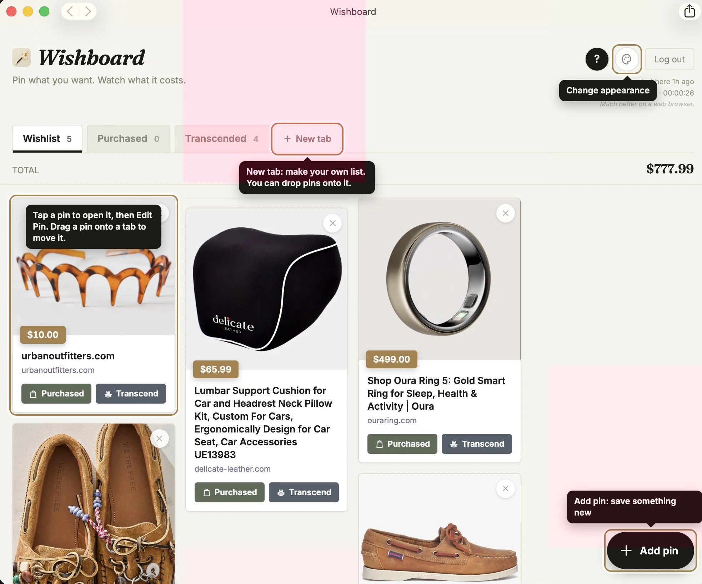
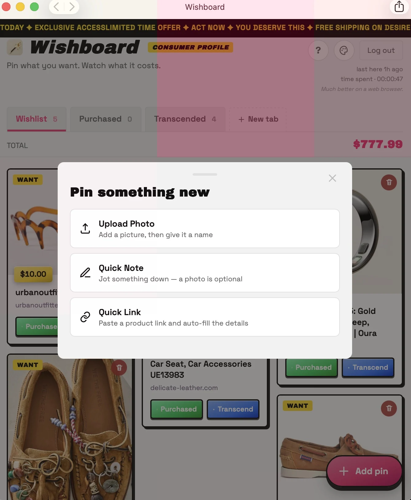

01 / MUSIC VIDEO · FILMING + EDITING
“Right Now” — EDM Remix
Collaborated on a music project, filming and editing the accompanying video.
Watch the video on YouTube ↗EXPAND PHOTOS FOR A CLOSER LOOK
Music videos and collaborative projects.
Collaborated on a music project, filming and editing the accompanying video.
Watch the video on YouTube ↗Collaborated with Soul Never Dies Collective to film and edit a video project.
Watch on Instagram ↗An experiment in turning an idea into a working digital platform with AI-assisted tools.
A Pinterest-style wishlist and budgeting app I built independently, combining visual inspiration with practical planning.

